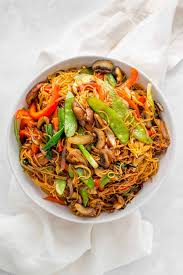

Noodles

Noodle, a cooked flour paste prominent in European and Asian cuisine, generally distinguished from pasta by its elongated ribbonlike form. Noodles are commonly used to add body and flavour to broth soups.
They are commonly boiled or sautéed and served with sauces and meats or baked in casseroles.
INGREDIENTS
- shredded cabbage
- shredded carrots
- 8-10 french beans(slice thiny or finely chop)
- sliced capsium
- choped spring onion
PREPARATIONS
- 1. First rinse and shred or chop all the veggies, then set aside
- Next heat 5 to 6 cups of water in a pan.
- Then when the water comes to a boil, add ½ teaspoon salt.
- Next add ½ teaspoon oil and mix well. Add any neutral oil.
- Then add the noodles (about 200 grams). I have used whole wheat noodles. The recipe is customizable with any noodles – instant, ramen, soba, chow mein, udon, rice.
Cook the noodles you will be using according to the package instructions as every variety of noodle will have a different cooking time.
For any variety of noodle, you need to cook them until al dente.
- Now boil until the noodles are cooked al dente.Be sure to check the doneness throughout the noodles recipe by pressing a few noodles or tasting them. They should be softened, but still have a slight bite to them.
- Then drain the cooked noodles in a colander or sieve.
- . Now heat 2 to 3 tablespoons of toasted sesame oil in a wok or pan. Keep the heat to low or medium-low. Add 1 teaspoon finely chopped garlic and 1 teaspoon finely chopped ginger.
Swap toasted sesame oil with any neutral oil or olive oil.
- . Then increase the flame to high and add ⅓ cup chopped spring onions (scallions).
- . Then add thinly sliced french beans (about 8 to 10 beans which have been thinly sliced).
- Then add the veggies: ½ cup shredded carrots, ⅓ cup thinly sliced capsicum and 1 cup shredded cabbage.
- Some crunch should be there in the vegetables, so don’t cook the vegetables until they become completely soft.
- Then add salt and crushed pepper as required.
- . Now add the cooked noodles.. Keep on tossing and stirring till the veggies are mixed well for minute or two. Switch off the heat. Check the taste and add more salt, black pepper or soy sauce if required to the veggie noodles.
- . Finally, serve this veg noodles recipe steaming hot as it is or with some black bean sauce or tomato sauce.